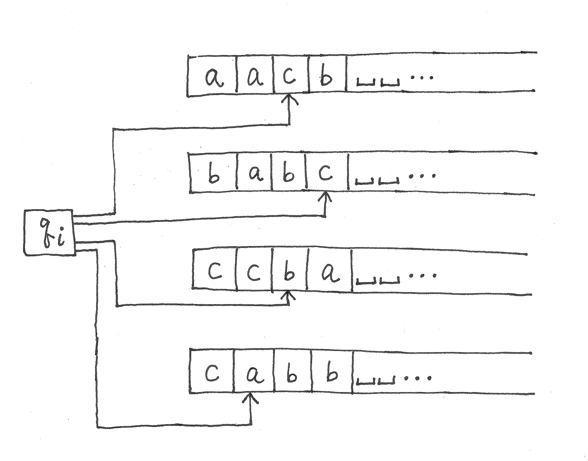
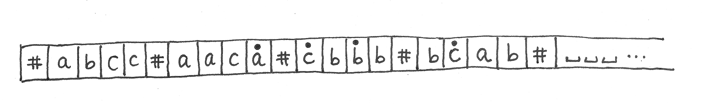

CS 381/722 Fall 2018
Homework Assignment #1
Due: in class on 09/25/18, Tuesday
Only hard copies will be accepted.
Late submissions and email submissions will not be accepted.
If you have not been able to solve a problem completely,
you may show the work you have done for partial points.
Observe
course policies
in solving assignment problems.
In all questions "_" is the blank symbol.
-
Consider the DTM to decide { w#w | w ∈ {0, 1}* } in Example 3.9 in the book.
Give the transition sequence on each of the following inputs:
- 11#11
- 10#11
-
Consider the NTM in
Question 2 here.
Give the computation tree of this NTM on input string abcabc.
-
This question is about the simulation of multi-tape DTMs by 1-tape DTMs.
Consider the following configuration of a 4-tape DTM with Γ = {a, b, c, _}:

- Give the 1-tape DTM configuration simulating the above configuration.
- Give the 1-tape DTM configuration simulating the configuration obtained by
the 4-tape DTM transition
δ(qi, c, c, b, a) = (qj, b, a, c, b, L, R, L, R) from the above configuration.
-
Recall the simulation of DTMs by RAMs described in class.
- Give the RAM memory configuration simulating
a5a1a2a3q4a6a4.
- Give the RAM memory configuration simulating the configuration obtained by the transition
δ(q4, a6) = (q2, a2, L) from the above configuration.
-
Recall the simulation of RAMs by multi-tape DTMs described in class and
consider the RAM program to compute n! described on
this page.
Show the contents of tape 1 (simulating the RAM memory) and tape 2 (simulating the accumulator r0) after
the execution of each instruction in this RAM program up to the first execution of "Mult 3".
Use a format similar to
Question 5 on this page, and
abbreviate integers in unary notation to decimal notation.
-
A second way to simulate multi-tape DTMs by 1-tape DTMs is to create segments of
tape symbols with respect to tape positions separated by delimiter symbols.
The first segment contains the string of tape symbols at the first positions of k tapes,
the second segment contains the string of symbols at the second positions, etc.
The symbols being read by the tape heads are simulated by dotted symbols.
For example, the configuration of the 4-tape DTM given in Question 3 is simulated by the following configuration:

-
Give the 1-tape DTM configuration simulating the configuration obtained by
the 4-tape DTM transition
δ(qi, c, c, b, a) = (qj, b, a, c, b, L, R, L, R) from the above configuration.
- Informally but in sufficient detail, describe a general tape configuration of the simulating 1-tape DTM.
- Informally but in sufficient detail, describe how to simulate a one-step transition of the given multi-tape DTM
in this method.
-
The random access machine with increment and decrement instructions, abbreviated as RAM-Inc-Dec, replaces
the four arithmetic instructions Add, Sub, Mult, Div of the RAM by the following two instructions:
Inc r0 ← r0 + 1
Dec r0 ← r0 − 1
The other instructions remain the same.
You are to show that the computing powers of the RAM and RAM-Inc-Dec are equivalent in principle
by following the steps below.
-
In detail, show how to simulate Add instruction by Inc, Dec instructions together with Load, Store,
and jump instructions.
First describe your simulation method in high-level pseudocode like the factorial example, then
translate it into instruction streams of RAM-Inc-Dec.
Note that values of ri and literal operands "=i" may be negative integers.
-
Describe clearly how to simulate Sub, Mult, Div instructions with help of high-level pseudo code;
no need to translate the pseudocode into instruction streams of RAM-Inc-Dec.
You may use previously simulated instructions as "subroutines" to simulate a new instruction.
For example, you may use the RAM-Inc-Dec code simulating Add instruction as a subroutine to
simulate Sub instruction, then use Add and/or Sub instructions as subroutines to simulate
Mult and/or Div.